“Where is the … key?”
Single Quotes vs Backticks
It’s important to distinguish between single quotes: ' and backticks `. They look similar, but aren’t interchangeable.
The backtick key is highlighted in the images of the keyboards below, in the top left side.
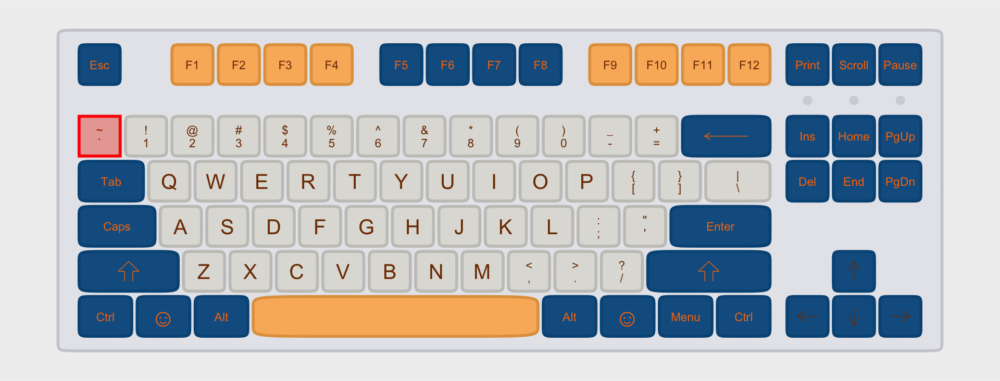
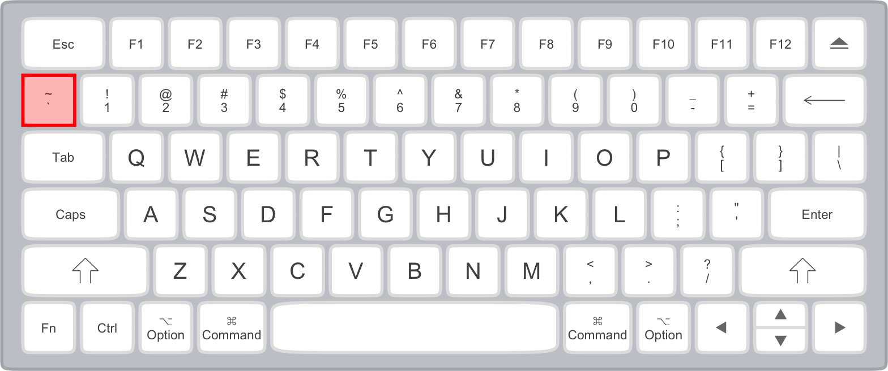
Slash (/) vs backslash (\).
These different symbols will do different things, and aren’t interchangeable!
Slash (/) location
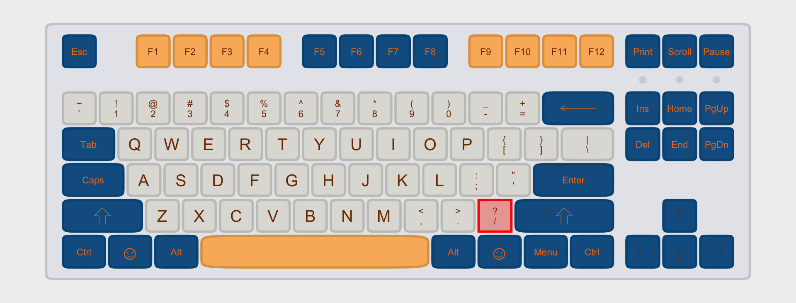
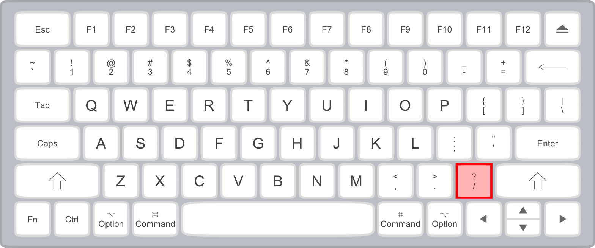
Backslash (\) location
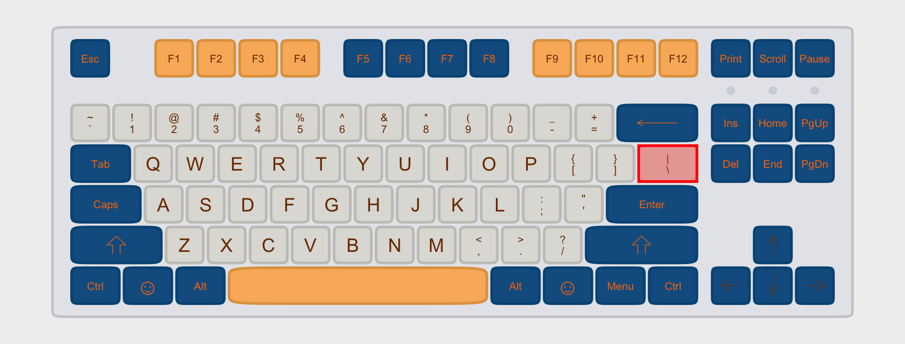
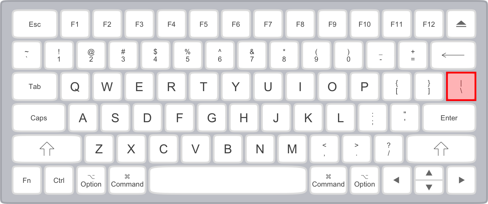
The tilde ~ key.
To type the tilde1 key you have to hold Shift+`.
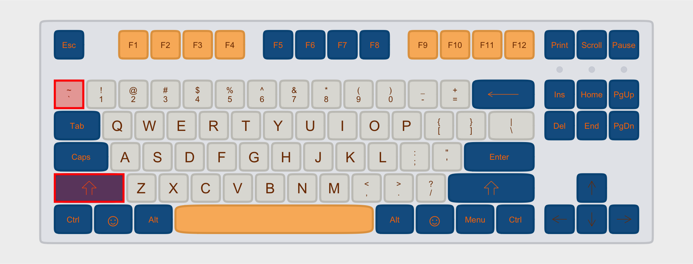
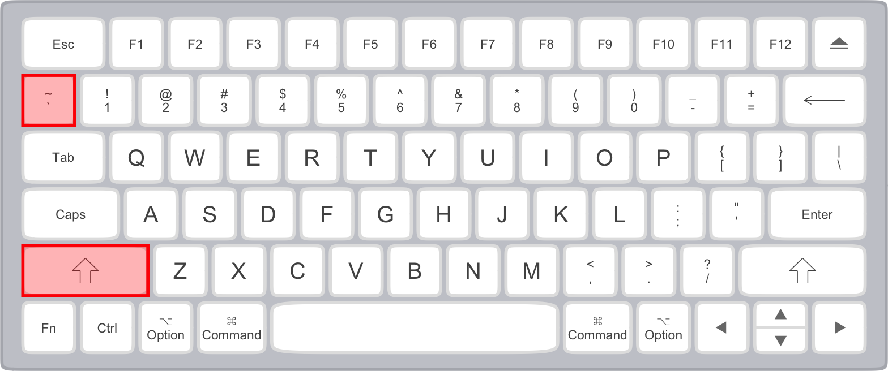
The caret ^
You can get the caret symbol with Shift+6
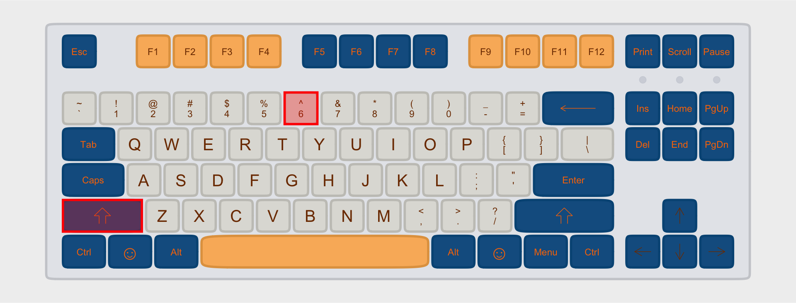
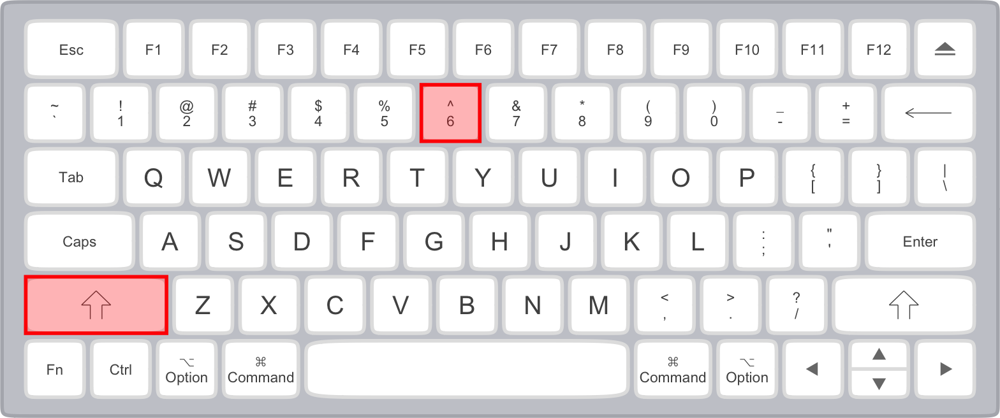
The Pipe |
You can get the pipe, or vertical bar, with Shift+\.
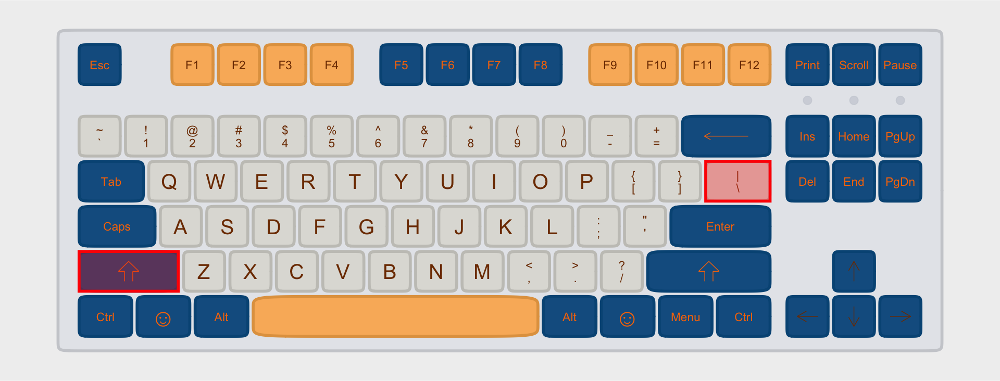
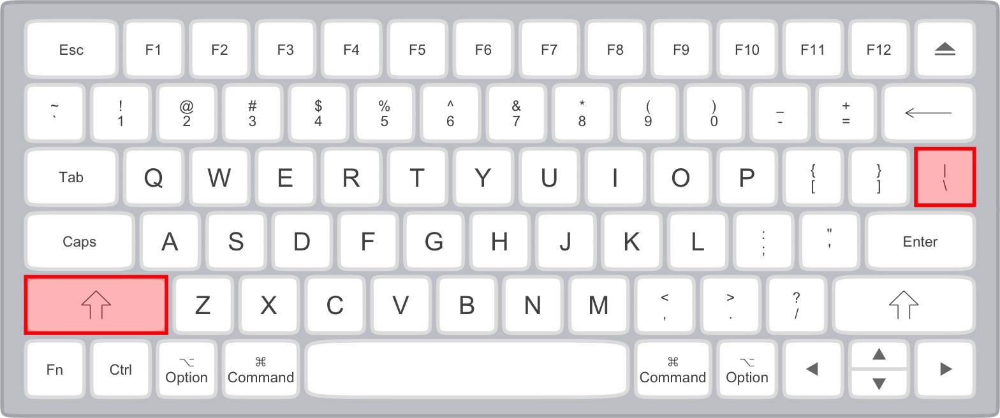
Side Note: “Smart Quotes”
If, at some point, you copy-paste text from the internet into your code or a text file, you might wind up with “smart quotes” that make things work weird!
| Regular Quotes | Smart Quotes |
|---|---|
"regular" |
“smart” |
'regular' |
‘smart’ |
Be careful not to have smart quotes cropping up in your code or data!
Footnotes
Pronunciations include [tɪl.də] and [tɪl.di]↩︎
Reuse
CC-BY-SA 4.0
Citation
BibTeX citation:
@online{fruehwald,
author = {Fruehwald, Josef},
title = {“{Where} Is the ... Key?”},
url = {https://lin511-2024.github.io/notes/concepts/01_keyboarding.html},
langid = {en}
}
For attribution, please cite this work as:
Fruehwald, Josef. n.d. “‘Where Is the ...
Key?’” https://lin511-2024.github.io/notes/concepts/01_keyboarding.html.